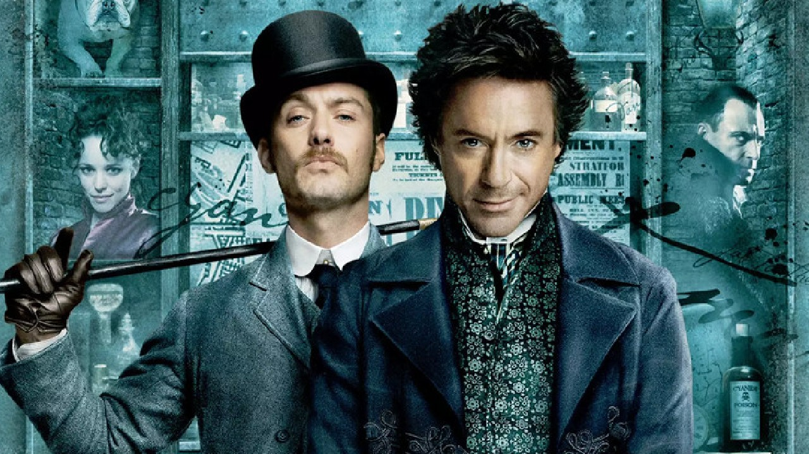

Merhaba!
Ben Mustafa Bilal DOĞAN. 29 yaşindayim. Petrol ve Doğalgaz mühendisiyim ve Yönetim Bilişimleri Sistemi bölümü mezunuyum.
Aksiyon filmlerini severim.
Kişisel gelişim kitaplarini okumak beni oldukça mutlu eder. Beyhan Budak ve Doğan Cüceloğlu kitaplari kütüphanemin temel yapitaşlaridir.
Açıklama : Kadın izleyicilerin birçoğunun iki favori aktörü Jude Law ve Robert Downey Jr, eşine az rastlanır bir uyumla, beyazperde'de Arthur Conan Doyle'un dünyaca ünlü karakteri Sherlock Holmes'ün yeni versiyonuna hayat veriyorlar. Bu dinamik yeni uyarlamada, Holmes ve cesur ortağı Watson, birbirinden tehlikeli maceralara gözlerini karartıp dalıyorlar. Dövüş tekniklerini, efsanevi zekası gibi silah olarak kullanan Holmes, bu serüvende ülkesini tahrip edebilecek ölümcül bir komployu aydınlatmak için yeni bir düşman ile savaşmak zorundadır. Robert Downey Jr. , efsanevi dedektif Sherlock Holmes'ü daha önce benzeri görülmemiş bir yorumla canlandırıyor. Jude Law ise doktor ve bir savaş gazisi olan, Holmes'ün kadim dostu, güvenilir çalışma arkadaşı Watson rolünde karşımıza çıkıyor. Holmes'ü alt eden ilk ve tek kadın olan ve dedektifle halen çalkantılı bir ilişki sürdüren Irene Adler rolünü Rachel McAdams üstleniyor. Mark Strong gizemli yeni düşman Blackwood rolünü oynuyor. Kelly Reilly ise Watson'ın ilgilendiği Mary rolünde yer alıyor.